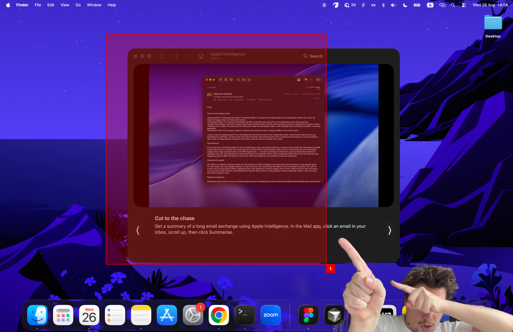
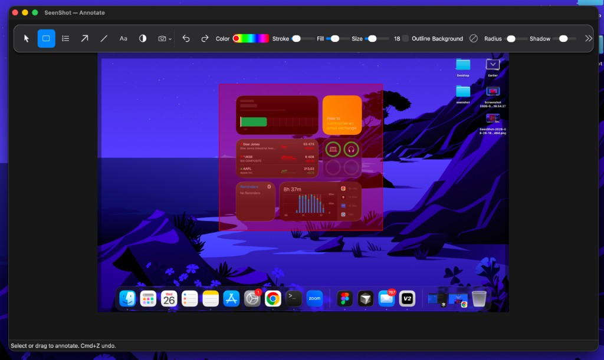

Photo
Add a webcam selfie on the screenshot in one click.

Fast, Free, Secure. Lightweight screenshot app for Mac with superfunctional annotation.

Add a webcam selfie on the screenshot in one click.

Highlight a zone with numbering.
Highlight a zone.


Add text on the screenshot.

Blur a piece of the screenshot.
Add a background under the screenshot.


Color picker for the last annotation.

Share the screenshot on the internet.
Add the screenshot to a website as an image.

Draw arrows and lines on the screenshot.